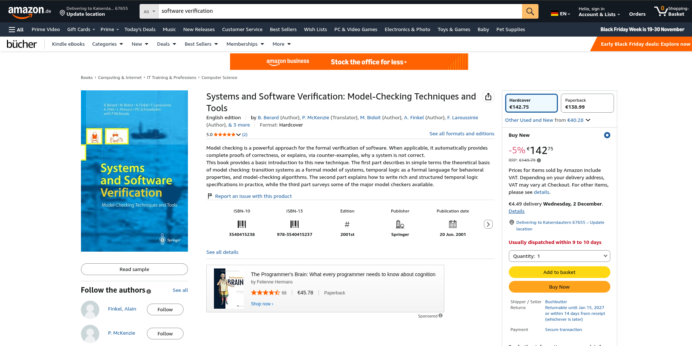

Durable
Workflow Engine
Fault-tolerant execution of long-running, multi-step business processes — with durable state, crash recovery, retries, and saga compensation.
npm run dev ·
./scripts/demo.sh
What is durability?
Durability is the ability of a physical product to remain functional, without requiring excessive maintenance or repair, when faced with the challenges of normal operation over its design lifetime.

One product page, many owners
How do the services stay in sync?
Billing, finance and fulfillment never share a database with Orders. So what happens when a write or a request is lost somewhere on the network?
- Crash between "write" and "publish": transactional outbox. The event is saved with the data, so it cannot be lost or exist without the order.
- Message lost in transit: the relay retries with exponential backoff and jitter until the bus acknowledges.
- Ack lost, so the event arrives twice: consumers deduplicate by event id (or an idempotency key sent by the client), so a redelivery cannot charge twice.
- Poison or permanently failing message: after N attempts it goes to a dead-letter queue, with an alert and a manual or automatic replay.
- Silent drift: a periodic reconciliation job compares the systems of record and repairs differences.
- Multi-step failure: a saga (for example, payment fails after stock was reserved) runs compensating actions such as releasing the stock.
Telling other boundaries that something changed
A service can reach another boundary in two ways: call it directly and wait (sync), or publish a message to a broker and let others react in their own time (async).
Synchronous
- How: request/response over HTTP or gRPC. The caller waits for the answer.
- Good for: reads that need an answer now, such as price and stock on the product page.
- Cost: the caller is coupled in time to the callee. If it is slow or down, the caller is slow or down too.
Asynchronous (message broker)
-
How: the owner publishes an event such as
OrderPlaced. It does not know who is listening. - Good for: notifying other boundaries of a change: billing, finance, fulfillment, marketing.
- Cost: eventual consistency, duplicate deliveries, and no ordering guarantee unless you design for it.
The write-and-publish problem
- Write, then publish: if the process dies in between, the order is saved but the event is lost. The systems are out of sync, and nothing reports an error.
- Publish, then write: if the write fails after the publish, other services act on an order that does not exist.
- Retrying does not fix it: the retry never happens if the process itself is gone.
The ideas we will discuss and build
Once boundaries own their data and talk through messages, a new set of problems appears. These are the concepts the rest of the project is built around.
Strong consistency
Every reader sees the latest committed write. Simple to reason about, but it costs latency and availability across services.
Where: money, such as the payment ledger.
Eventual consistency
Copies may differ for a while, but they converge if no new writes arrive. Availability is traded for temporary staleness.
Where: stock counts, recommendations, reviews.
Idempotency
Doing the same operation twice has the same effect as doing it once. It is what makes retries safe.
Where: billing deduplicates by event id.
At-least-once delivery
The broker never drops a message but may deliver it more than once. Exactly-once delivery is not achievable, so we pair this with idempotent consumers.
Where: event bus to every consumer.
Transactional outbox
Save the event in the same database transaction as the data, then publish it later. This solves the write-and-publish problem.
Where: Orders service to event bus.
Sagas & compensation
A business flow across services has no global transaction. If a step fails, earlier steps are undone by compensating actions.
Where: payment fails, so release reserved stock.
Ordering & causality
Events can arrive out of order. We decide what must be ordered (per order id, via partition keys or versions) and tolerate the rest.
Where: PaymentCaptured must not precede OrderPlaced.
Retries, DLQ & reconciliation
Retry with backoff, park poison messages in a dead-letter queue, and run periodic checks that repair silent drift.
Where: the safety nets behind every consumer.